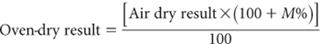
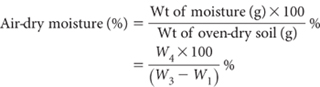

Use this method when it is necessary to correct soil chemical results based on air-dry samples to an oven-dry basis.
When the air-dry moisture content (M%) is known, the correction from air-dry result to oven-dry result is as follows:

Confirm the weight of each clean, dry, weighing container (W1 g). Weigh accurately from 10 to 50 g air-dry soil (<2 mm) into each container and record weight (W2 g). With lids removed, dry at 105°C to constant weight then quickly transfer to a dry desiccator (no desiccant) to cool. When cool, replace relevant lids and reweigh (W3 g) to determine weight of moisture [(W2 – W1) – (W3 – W1)] = W4 g.
Discard soil on completion in a responsible manner.

Report as air-dry moisture content (%).